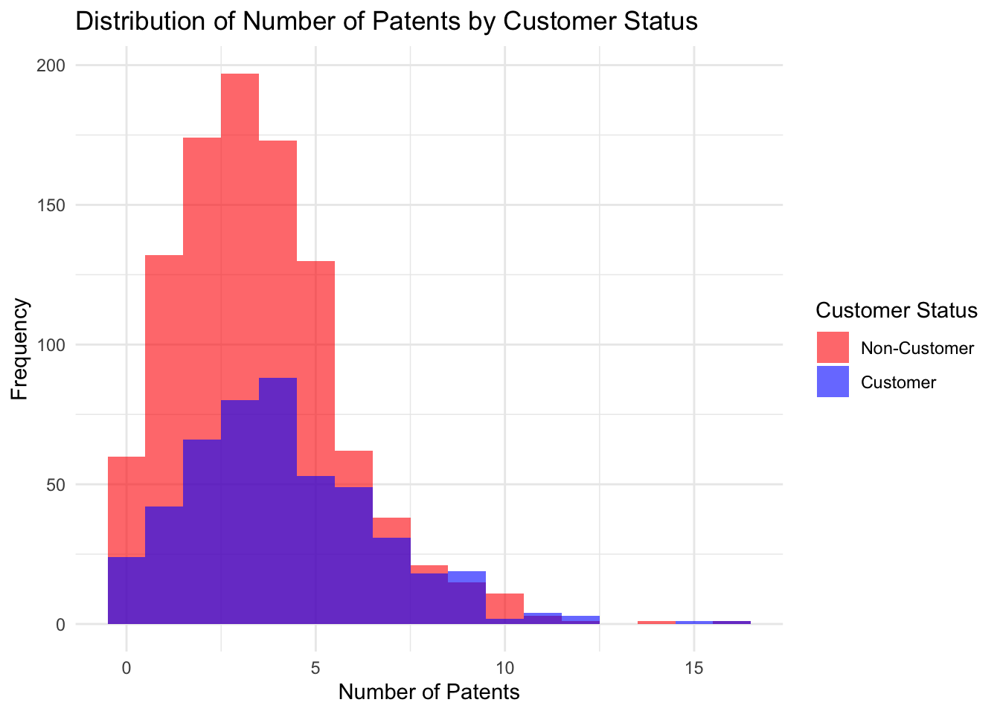
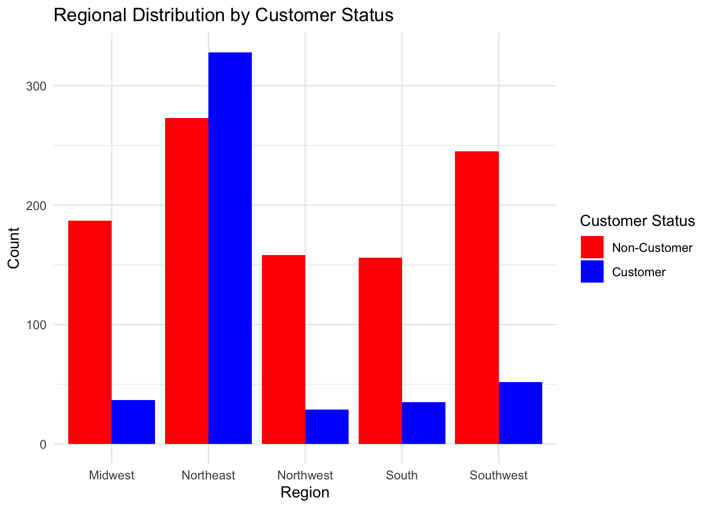
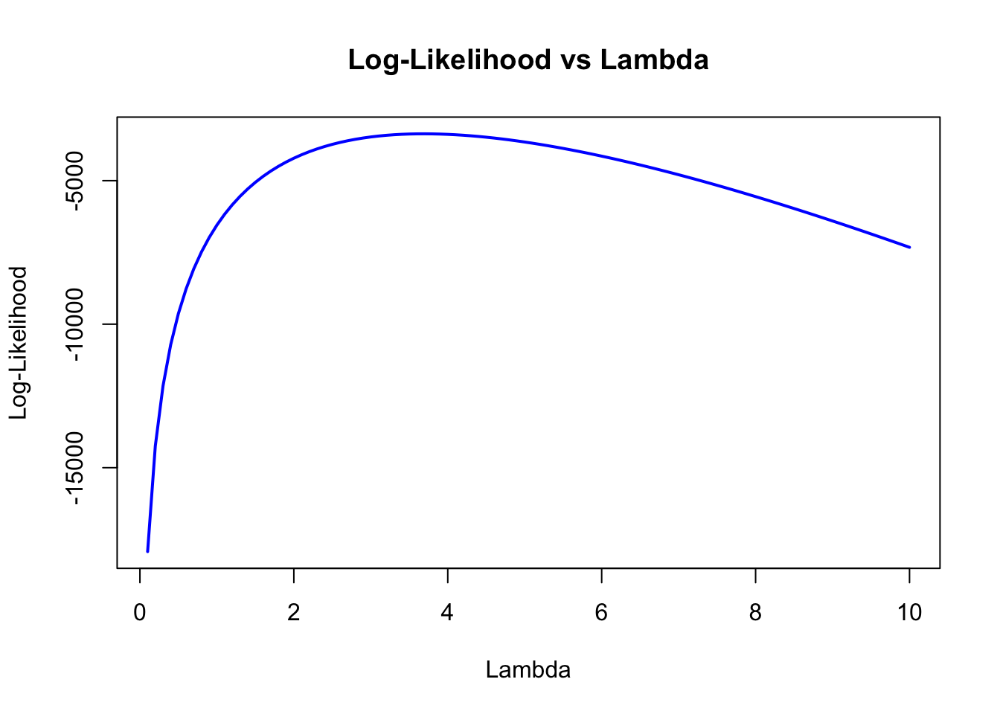
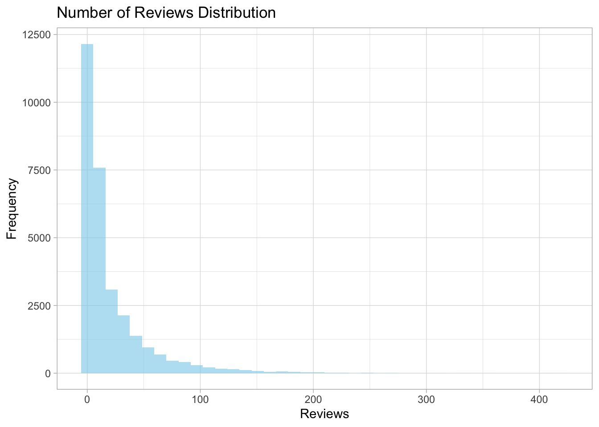

patents region age iscustomer
1 0 Midwest 32.5 0
2 3 Southwest 37.5 0
3 4 Northwest 27.0 1
4 3 Northeast 24.5 0
5 3 Southwest 37.0 0
6 6 Northeast 29.5 1Poisson Regression Examples
Blueprinty Case Study
Introduction
Blueprinty is a small firm that makes software for developing blueprints specifically for submitting patent applications to the US patent office. Their marketing team would like to make the claim that patent applicants using Blueprinty’s software are more successful in getting their patent applications approved. Ideal data to study such an effect might include the success rate of patent applications before using Blueprinty’s software and after using it. Unfortunately, such data is not available.
However, Blueprinty has collected data on 1,500 mature (non-startup) engineering firms. The data include each firm’s number of patents awarded over the last 5 years, regional location, age since incorporation, and whether or not the firm uses Blueprinty’s software. The marketing team would like to use this data to make the claim that firms using Blueprinty’s software are more successful in getting their patent applications approved.
Data
To compare the patent success of firms using Blueprinty’s software versus those that do not, I first look at the histograms for both groups. The histograms show the distribution of patents awarded, with separate colors indicating whether the firm is a customer or not. I also calculate the mean number of patents for both groups. This allows us to compare the average success between software users and non-users and assess whether Blueprinty’s software correlates with higher patent approval rates.

Attaching package: 'dplyr'The following objects are masked from 'package:stats':
filter, lagThe following objects are masked from 'package:base':
intersect, setdiff, setequal, union# A tibble: 2 × 2
iscustomer mean_patents
<int> <dbl>
1 0 3.47
2 1 4.13The histogram shows that firms using Blueprinty’s software tend to have more patents than non-users. The average number of patents for software users is 4.13, compared to 3.47 for non-users, suggesting that the software may be associated with higher patent success.
Blueprinty customers are not selected at random. It may be important to account for systematic differences in the age and regional location of customers vs non-customers.
To compare the regions and ages between Blueprinty customers and non-customers, I begin by summarizing the data to see how these variables differ across the two groups. By examining the regional distribution and age, we can gain insights into whether there are systematic differences between customers and non-customers.
- Compare the regional distribution:

In the Northeast, non-customers (red) significantly outnumber customers (blue), while in the Midwest, customers and non-customers are more balanced. The South has a relatively higher number of non-customers, but the Southwest shows a clear dominance of customers over non-customers.
This suggests that the adoption of Blueprinty’s software is not evenly distributed across regions, with certain regions (like the Southwest) showing a higher proportion of customers, while others (like the Northeast) have more non-customers.
- Compare ages:
# A tibble: 2 × 4
iscustomer mean_age median_age age_range
<int> <dbl> <dbl> <chr>
1 0 26.1 25.5 9 - 47.5
2 1 26.9 26.5 10 - 49 Regarding age, the average and median ages for both customers and non-customers are similar, with non-customers having an average age of 26.1 and customers 26.9. The age range is also nearly the same, indicating that age is not a major factor influencing the adoption of Blueprinty’s software.
Estimation of Simple Poisson Model
Since our outcome variable of interest can only be small integer values per a set unit of time, I use a Poisson density to model the number of patents awarded to each engineering firm over the last 5 years. I start by estimating a simple Poisson model via Maximum Likelihood.
The likelihood function for ( Y () ) is given by:
\[ f(Y | \lambda) = \frac{\lambda^Y e^{-\lambda}}{Y!} \]
Where: - ( Y ) is the number of patents awarded to a firm, - lambda is the rate parameter (mean number of patents), and - ( Y! ) is the factorial of ( Y ).
For a sample of independent observations ( Y_1, Y_2, , Y_n ), the likelihood function is the product of the individual likelihoods:
\[ L(\lambda) = \prod_{i=1}^{n} \frac{\lambda^{Y_i} e^{-\lambda}}{Y_i!} \]
Where ( n ) is the number of firms in the sample.
To estimate lambda , we maximize the log-likelihood:
\[ \log L(\lambda) = \sum_{i=1}^{n} \left( Y_i \log \lambda - \lambda - \log(Y_i!) \right) \]
Maximizing the log-likelihood will provide the estimate for lambda, which represents the average number of patents awarded across all firms in the dataset.
I then use this function to calculate the log-likelihood for a given value of 𝜆 in Poisson model and a vector of observed patent counts.
# Define the log-likelihood function for the Poisson model
poisson_loglikelihood <- function(lambda, Y) {
# Calculate the log-likelihood
log_likelihood <- sum(Y * log(lambda) - lambda - log(factorial(Y)))
# Return the log-likelihood
return(log_likelihood)
}# Define the observed number of patents
# For demonstration, using a sample set of data
Y <- data$patents
# Define a range of lambda values
lambda_range <- seq(0.1, 10, by = 0.1) # Range of lambda values from 0.1 to 10
# Calculate the log-likelihood for each lambda value
log_likelihood_values <- sapply(lambda_range, function(lambda) poisson_loglikelihood(lambda, Y))
# Plot the log-likelihood function
plot(lambda_range, log_likelihood_values, type = "l",
main = "Log-Likelihood vs Lambda",
xlab = "Lambda",
ylab = "Log-Likelihood",
col = "blue", lwd = 2)
The plot shows the log-likelihood function for different values of𝜆, representing the average number of patents. It increases sharply at first, then levels off and decreases as 𝜆 continues to rise. The peak of the curve indicates the optimal value of 𝜆, which corresponds to the maximum likelihood estimate for the average number of patents awarded.
To find the Maximum Likelihood Estimate (MLE) for 𝜆 in a Poisson distribution, we take the first derivative of the log-likelihood function with respect to 𝜆, set it equal to zero, and solve for 𝜆.
The log-likelihood function is:
\[ \log L(\lambda) = \sum_{i=1}^{n} \left( Y_i \log \lambda - \lambda - \log(Y_i!) \right) \]
Taking the first derivative with respect to 𝜆:
\[ \frac{d}{d\lambda} \log L(\lambda) = \sum_{i=1}^{n} \left( \frac{Y_i}{\lambda} - 1 \right) \]
Setting this equal to zero:
\[ \sum_{i=1}^{n} \left( \frac{Y_i}{\lambda} - 1 \right) = 0 \]
Simplifying:
\[ \lambda = \frac{1}{n} \sum_{i=1}^{n} Y_i = \bar{Y} \]
Thus, the MLE for \(\lambda\) is the sample mean of the observed values Y , denoted bar_Y. This is consistent with the fact that the mean of a Poisson distribution is \(\lambda\).
# Define the log-likelihood function for the Poisson model
poisson_loglikelihood <- function(lambda, Y) {
log_likelihood <- sum(Y * log(lambda) - lambda - log(factorial(Y)))
return(log_likelihood) # Return log-likelihood
}
# Define the observed number of patents (Y)
Y <- data$patents # Replace 'data$patents' with your actual data column
# Use optim() to find the MLE for lambda using the Brent method
mle_result <- optim(par = 1, fn = function(l) -poisson_loglikelihood(l, Y),
method = "Brent", lower = 0.01, upper = 20)
# Extract the MLE for lambda
lambda_mle <- mle_result$par
lambda_mle[1] 3.684667The MLE of λ is 3.684667, meaning that the estimated rate of patents awarded per firm over the last 5 years is approximately 3.68.
Estimation of Poisson Regression Model
Next, we extend our simple Poisson model to a Poisson Regression Model such that \(Y_i = \text{Poisson}(\lambda_i)\) where \(\lambda_i = \exp(X_i'\beta)\). The interpretation is that the success rate of patent awards is not constant across all firms (\(\lambda\)) but rather is a function of firm characteristics \(X_i\). Specifically, we will use the covariates age, age squared, region, and whether the firm is a customer of Blueprinty.
To estimate the MLE vector and the Hessian of the Poisson regression model with covariates using R’s optim() function, and then calculate the standard errors, follow the steps below. We’ll use the Hessian matrix from the optimization result to compute the standard errors of the coefficient estimates.
Attaching package: 'MASS'The following object is masked from 'package:dplyr':
select Term Estimate StdError
1 intercept -0.057869390 0.0247676826
2 age 0.111376215 0.0034735079
3 age_sq -0.002175247 0.0000530556
4 regionNortheast 0.001218348 0.0375689502
5 regionNorthwest -0.007435508 0.0489787049
6 regionSouth -0.017080725 0.0486594534
7 regionSouthwest 0.004882447 0.0430424130
8 iscustomer 0.000000000 0.0000000000Then I check my results using R’s glm() function.
Call:
glm(formula = Y ~ X, family = poisson(link = "log"))
Deviance Residuals:
Min 1Q Median 3Q Max
-2.9781 -0.9278 -0.1149 0.5924 5.0424
Coefficients: (2 not defined because of singularities)
Estimate Std. Error z value Pr(>|z|)
(Intercept) -0.3843338 0.1820919 -2.111 0.03480 *
Xintercept NA NA NA NA
Xage 0.1407257 0.0138101 10.190 < 2e-16 ***
Xage_sq -0.0028103 0.0002568 -10.944 < 2e-16 ***
XregionNortheast 0.1121092 0.0417496 2.685 0.00725 **
XregionNorthwest -0.0193872 0.0537827 -0.360 0.71849
XregionSouth 0.0609820 0.0526598 1.158 0.24685
XregionSouthwest 0.0544801 0.0472012 1.154 0.24841
Xiscustomer NA NA NA NA
---
Signif. codes: 0 '***' 0.001 '**' 0.01 '*' 0.05 '.' 0.1 ' ' 1
(Dispersion parameter for poisson family taken to be 1)
Null deviance: 2362.5 on 1499 degrees of freedom
Residual deviance: 2187.8 on 1493 degrees of freedom
AIC: 6574.7
Number of Fisher Scoring iterations: 5Interpret the results:
The Poisson regression model shows the following:
Significant predictors:
Age (Xage) has a positive effect on the outcome, with each additional year increasing the log of the expected count.
Age squared (Xage_sq) has a negative effect, indicating a diminishing relationship as age increases.
Region (Northeast) (XregionNortheast) is significant, suggesting that being in the Northeast increases the expected count.
Insignificant predictors:
Other regions (Northwest, South, Southwest) and customer status (Xiscustomer) are not statistically significant.
Model fit: The model improves on the null model, as indicated by the decrease in deviance, though there’s still room for improvement.
To assess the impact of Blueprinty’s software on patent success, we simulate two scenarios: one where firms do not use the software (X_0, with iscustomer = 0), and one where they do (X_1, with iscustomer = 1). We use the fitted Poisson regression model to predict the number of patents for firms in both scenarios, obtaining y_pred_0 and y_pred_1, respectively.
We then compute the average of this difference. A positive average suggests that using the software increases patent success, while a negative average suggests a decrease. An average close to zero indicates no significant effect.
This method estimates the average impact of Blueprinty’s software on patent success by comparing the predicted outcomes for firms with and without the software.
AirBnB Case Study
Introduction
AirBnB is a popular platform for booking short-term rentals. In March 2017, students Annika Awad, Evan Lebo, and Anna Linden scraped of 40,000 Airbnb listings from New York City. The data include the following variables:
Assume the number of reviews is a good proxy for the number of bookings. Perform some exploratory data analysis to get a feel for the data, handle or drop observations with missing values on relevant variables, build one or more models (e.g., a poisson regression model for the number of bookings as proxied by the number of reviews), and interpret model coefficients to describe variation in the number of reviews as a function of the variables provided.
Rows: 40,628
Columns: 14
$ X <int> 1, 2, 3, 4, 5, 6, 7, 8, 9, 10, 11, 12, 13, 1…
$ id <int> 2515, 2595, 3647, 3831, 4611, 5099, 5107, 51…
$ days <int> 3130, 3127, 3050, 3038, 3012, 2981, 2981, 29…
$ last_scraped <chr> "4/2/2017", "4/2/2017", "4/2/2017", "4/2/201…
$ host_since <chr> "9/6/2008", "9/9/2008", "11/25/2008", "12/7/…
$ room_type <chr> "Private room", "Entire home/apt", "Private …
$ bathrooms <dbl> 1, 1, 1, 1, NA, 1, 1, NA, 1, 1, 1, 1, 1, NA,…
$ bedrooms <int> 1, 0, 1, 1, 1, 1, 2, 1, 1, 1, 1, 1, 1, 1, 2,…
$ price <int> 59, 230, 150, 89, 39, 212, 250, 60, 129, 79,…
$ number_of_reviews <int> 150, 20, 0, 116, 93, 60, 60, 50, 53, 329, 11…
$ review_scores_cleanliness <int> 9, 9, NA, 9, 9, 9, 10, 8, 9, 7, 10, 9, 9, 9,…
$ review_scores_location <int> 9, 10, NA, 9, 8, 9, 9, 9, 10, 10, 10, 9, 10,…
$ review_scores_value <int> 9, 9, NA, 9, 9, 9, 10, 9, 9, 9, 10, 9, 10, 9…
$ instant_bookable <chr> "f", "f", "f", "f", "t", "f", "f", "f", "f",… X id days last_scraped
Min. : 1 Min. : 2515 Min. : 1 Length:40628
1st Qu.:10158 1st Qu.: 4889868 1st Qu.: 542 Class :character
Median :20314 Median : 9862878 Median : 996 Mode :character
Mean :20314 Mean : 9698889 Mean : 1102
3rd Qu.:30471 3rd Qu.:14667894 3rd Qu.: 1535
Max. :40628 Max. :18009669 Max. :42828
host_since room_type bathrooms bedrooms
Length:40628 Length:40628 Min. :0.000 Min. : 0.000
Class :character Class :character 1st Qu.:1.000 1st Qu.: 1.000
Mode :character Mode :character Median :1.000 Median : 1.000
Mean :1.125 Mean : 1.147
3rd Qu.:1.000 3rd Qu.: 1.000
Max. :8.000 Max. :10.000
NA's :160 NA's :76
price number_of_reviews review_scores_cleanliness
Min. : 10.0 Min. : 0.0 Min. : 2.000
1st Qu.: 70.0 1st Qu.: 1.0 1st Qu.: 9.000
Median : 100.0 Median : 4.0 Median :10.000
Mean : 144.8 Mean : 15.9 Mean : 9.198
3rd Qu.: 170.0 3rd Qu.: 17.0 3rd Qu.:10.000
Max. :10000.0 Max. :421.0 Max. :10.000
NA's :10195
review_scores_location review_scores_value instant_bookable
Min. : 2.000 Min. : 2.000 Length:40628
1st Qu.: 9.000 1st Qu.: 9.000 Class :character
Median :10.000 Median :10.000 Mode :character
Mean : 9.414 Mean : 9.332
3rd Qu.:10.000 3rd Qu.:10.000
Max. :10.000 Max. :10.000
NA's :10254 NA's :10256 Data cleaning:
X id days last_scraped
Min. : 1 Min. : 2515 Min. : 7 Length:30160
1st Qu.: 8630 1st Qu.: 4276690 1st Qu.: 584 Class :character
Median :18236 Median : 9149028 Median : 1041 Mode :character
Mean :18679 Mean : 8978287 Mean : 1140
3rd Qu.:28532 3rd Qu.:13914758 3rd Qu.: 1592
Max. :40504 Max. :17973686 Max. :42828
host_since room_type bathrooms bedrooms
Length:30160 Entire home/apt:15543 Min. :0.000 Min. : 0.000
Class :character Private room :13773 1st Qu.:1.000 1st Qu.: 1.000
Mode :character Shared room : 844 Median :1.000 Median : 1.000
Mean :1.122 Mean : 1.151
3rd Qu.:1.000 3rd Qu.: 1.000
Max. :6.000 Max. :10.000
price number_of_reviews review_scores_cleanliness
Min. : 10.0 Min. : 1.00 Min. : 2.000
1st Qu.: 70.0 1st Qu.: 3.00 1st Qu.: 9.000
Median : 103.0 Median : 8.00 Median :10.000
Mean : 140.2 Mean : 21.17 Mean : 9.202
3rd Qu.: 169.0 3rd Qu.: 26.00 3rd Qu.:10.000
Max. :10000.0 Max. :421.00 Max. :10.000
review_scores_location review_scores_value instant_bookable
Min. : 2.000 Min. : 2.000 Min. :0.0000
1st Qu.: 9.000 1st Qu.: 9.000 1st Qu.:0.0000
Median :10.000 Median :10.000 Median :0.0000
Mean : 9.415 Mean : 9.334 Mean :0.1962
3rd Qu.:10.000 3rd Qu.:10.000 3rd Qu.:0.0000
Max. :10.000 Max. :10.000 Max. :1.0000 Distribution of Reviews:

Poisson Regression Model:
Call:
glm(formula = number_of_reviews ~ days + price + bedrooms + bathrooms +
review_scores_cleanliness + review_scores_location + review_scores_value +
instant_bookable + room_type, family = poisson(link = "log"),
data = airbnb_processed)
Deviance Residuals:
Min 1Q Median 3Q Max
-21.096 -4.804 -3.001 0.961 38.630
Coefficients:
Estimate Std. Error z value Pr(>|z|)
(Intercept) 3.498e+00 1.609e-02 217.396 < 2e-16 ***
days 5.072e-05 3.909e-07 129.757 < 2e-16 ***
price -1.791e-05 8.327e-06 -2.151 0.031485 *
bedrooms 7.409e-02 1.992e-03 37.197 < 2e-16 ***
bathrooms -1.177e-01 3.749e-03 -31.394 < 2e-16 ***
review_scores_cleanliness 1.131e-01 1.496e-03 75.611 < 2e-16 ***
review_scores_location -7.690e-02 1.609e-03 -47.796 < 2e-16 ***
review_scores_value -9.108e-02 1.804e-03 -50.490 < 2e-16 ***
instant_bookable 3.459e-01 2.890e-03 119.666 < 2e-16 ***
room_typePrivate room -1.054e-02 2.738e-03 -3.847 0.000119 ***
room_typeShared room -2.463e-01 8.620e-03 -28.578 < 2e-16 ***
---
Signif. codes: 0 '***' 0.001 '**' 0.01 '*' 0.05 '.' 0.1 ' ' 1
(Dispersion parameter for poisson family taken to be 1)
Null deviance: 961626 on 30159 degrees of freedom
Residual deviance: 926886 on 30149 degrees of freedom
AIC: 1048375
Number of Fisher Scoring iterations: 9Conclusion The Poisson regression model provides insights into the factors influencing the number of reviews for Airbnb listings in New York City. Several variables were found to significantly affect the number of reviews:
Days Listed: A positive relationship between the number of days a property has been listed and the number of reviews suggests that longer-listed properties tend to accumulate more reviews.
Price: A negative coefficient for price indicates that higher-priced listings tend to receive fewer reviews, though the effect is relatively small.
Bedrooms and Bathrooms: More bedrooms are associated with more reviews, whereas more bathrooms are linked to fewer reviews, possibly reflecting the impact of property size on review frequency.
Review Scores: Listings with higher cleanliness and location scores are likely to receive more reviews, while lower value scores negatively affect the number of reviews.
Instant Bookable: The instant bookable feature has a strong positive effect on reviews, suggesting that properties with this feature attract more bookings and reviews.
Room Type: Shared rooms show a significant decrease in reviews compared to entire homes or private rooms, implying that room type plays an important role in attracting reviews.
The model’s fit, with a residual deviance of 926,886 and an AIC of 1,048,375, indicates that it explains a substantial portion of the variation in the number of reviews. Most predictors, except for price and room type, are statistically significant, underscoring their importance in determining the number of reviews.
In conclusion, Airbnb hosts can benefit from improving listing duration, cleanliness, location, and offering features like instant booking to increase their number of reviews. Additionally, adjusting price and room type may also have a meaningful impact on review frequency.